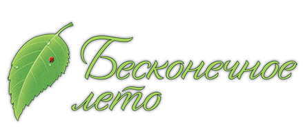
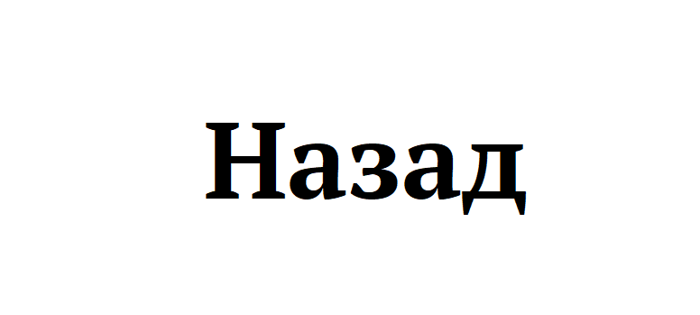

О мире игры:
"Совенок"
пионерский лагерь, в котором происходит действие визуальной новеллы. Прототипом «Совёнка» является СОЛ «Волга», а название — возможная отсылка к ВДЦ «Орлёнок» .
Лагерь расположен на берегу неизвестной реки. По догадкам главного героя, он находится где-то на юге Советского Союза
Существуют две оригинальных версии разработчиков:
Старый сценарий, в котором «Совёнок» находится внутри силового поля, размещённого в бункере Москва-2, находящемся под столицей, время действия — 2010 год.
Новый сценарий, в котором лагерь (являющийся дифференцируемым неориентированным многообразием, т. е. континуумом, в котором время и пространство цикличны и не имеют связи с пространством и временем других реальностей.
Время — петля Мёбиуса — 7 дней для главного героя и 14 дней для остальных. Пространство — бутылка Клейна — континуум, не имеющий 2-й стороны (в нём нет «внутри» и «снаружи»)), собирает пионеров из разных реальностей.
